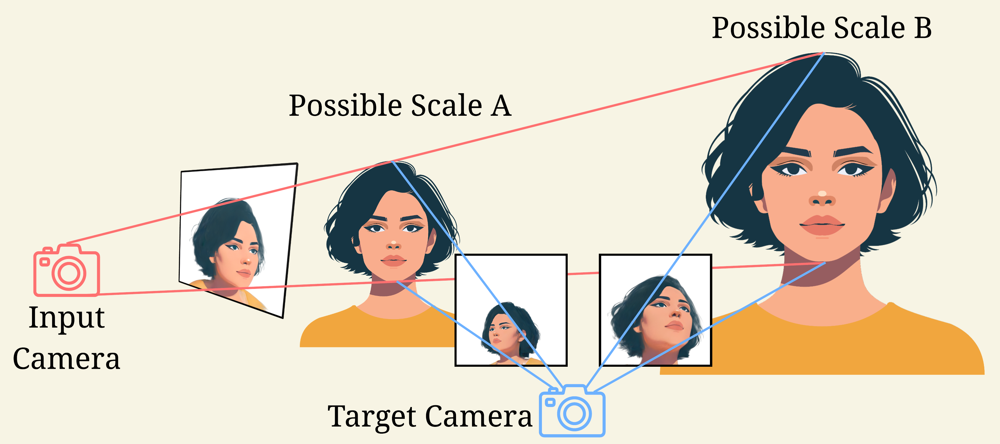
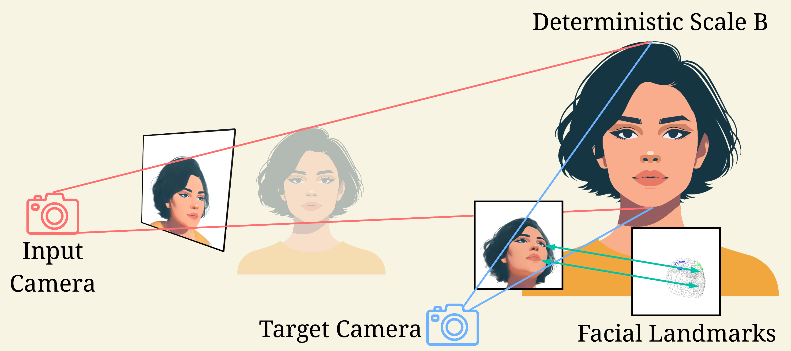
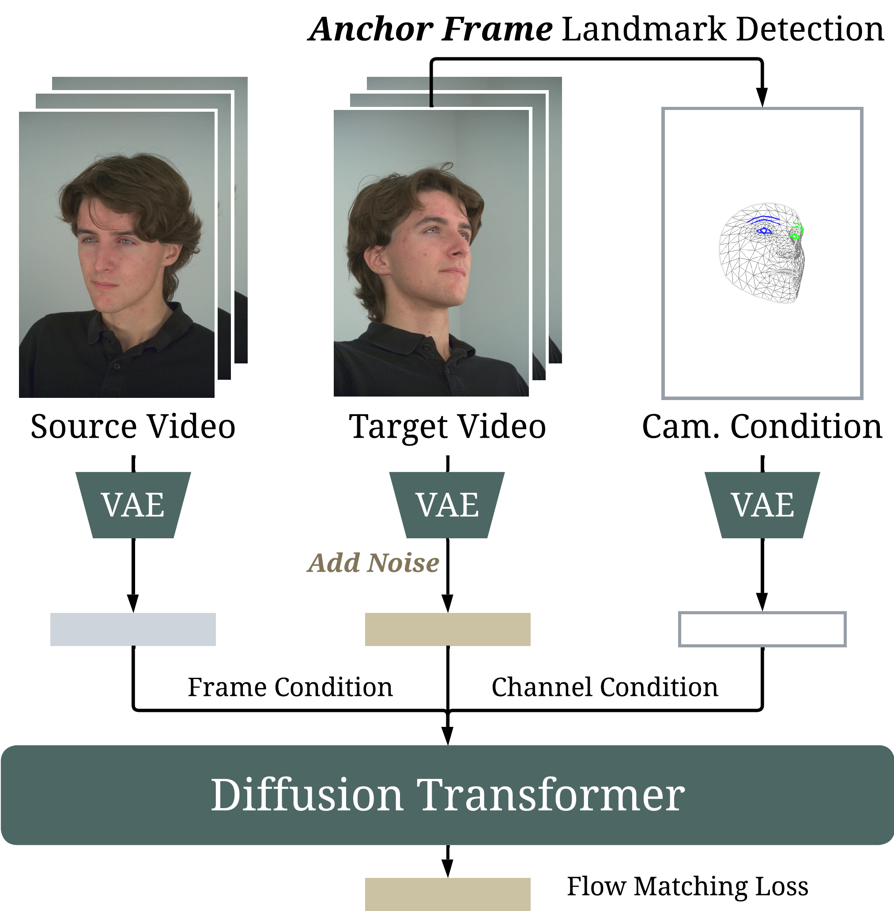
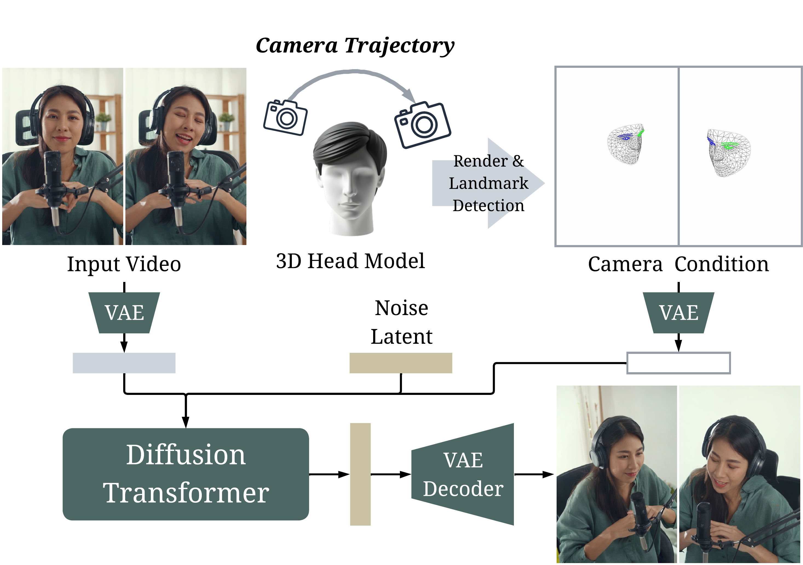

We introduce FaceCam, a system that generates video under customizable camera trajectories for monocular human portrait video input. Recent camera control approaches based on large video-generation models have shown promising progress but often exhibit geometric distortions and visual artifacts on portrait videos due to scale-ambiguous camera representations or 3D reconstruction errors. To overcome these limitations, we propose a face-tailored scale-aware representation for camera transformations that provides deterministic conditioning without relying on 3D priors. We train a video generation model on both multi-view studio captures and in-the-wild monocular videos, and introduce two camera-control data generation strategies: synthetic camera motion and multi-shot stitching, to exploit stationary training cameras while generalizing to dynamic, continuous camera trajectories at inference time. Experiments on Ava-256 dataset and diverse in-the-wild videos demonstrate that FaceCam achieves superior performance in camera controllability, visual quality, identity and motion preservation.

Scale-ambiguous camera representation. Existing camera control methods encode camera using extrinsic parameters. In monocular capture, metric depth is unobservable, the scene is determined only up to a global similarity with unknown scale and translation. Hence, the same image admits infinitely many 3D configurations, making re-rendering from a target pose underdetermined and leading to drift and poor controllability.
Scale-aware camera representation. We encode the camera via image-space point correspondences. With 2D correspondences, the fundamental matrix between two uncalibrated views can be estimated, and with known intrinsics the relative pose is recovered up to a global scale. Portrait videos naturally provide such correspondences through facial landmarks, so we use rasterized 2D landmark maps as the camera representation.We train our network on a studio-captured multi-view human video dataset with only static cameras. To enable dynamic camera trajectories at inference, we introduce two data generation strategies: synthetic camera motion and multi-shot stitching. We find that the discontinuous camera pose changes produced by multi-shot stitching during training generalize well to continuous camera trajectories at inference, without relying on any 4D synthetic data for training.

Training. We extract facial landmarks from the anchor frame of the target video as camera condition. Source video, target video, and camera condition are encoded by a VAE into latents, which are passed into the diffusion transformer to pre- dict the target latent, optimized with a flow-matching loss.
Inference. We use a 3D head model generated as a generic head, render it along the target camera trajectory, and detect facial landmarks as the camera condition. The output latent from the diffusion transformer is decoded by a VAE decoder to obtain the camera- controlled video. We observe that, although the model is trained only with discontinuous camera pose changes, it generalizes to continuous camera trajectories during inference.@misc{facecam,
title = {FaceCam: Portrait Video Camera Control via Scale-Aware Conditioning},
author = {Weijie Lyu and Ming-Hsuan Yang and Zhixin Shu},
year = {2026},
eprint = {2603.05506},
archivePrefix = {arXiv},
primaryClass = {cs.CV},
url = {https://arxiv.org/abs/2603.05506},
}